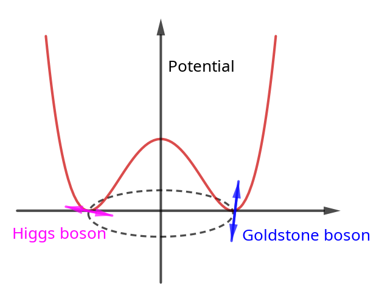

Susskind's Particle Pyhsics II: Standard Model Note
Table of Contents
- 1. Information
- 2. Lecture 1: Particles, Fields & Forces
- 3. Lecture 2: Quantum Chromodynamics
- 4. Lecture 3: Group Theory - Part 1
- 5. Lecture 4: Group Theory - Part 2
- 6. Lecture 5: Gauge Fields and Symmetry
- 7. Lecture 6: The Weak Interaction
- 8. Lecture 7: Spontaneous Symmetry Breaking & Goldstone Bosons
- 9. Lecture 8: The Higgs Field
- 10. Lecture 9: The Higgs Field & Fermions
- 11. Lecture 10: Running of Coupling Constant
- 12. Self-Examination Questions
- 13. Reference
1. Information
- 官方介绍: https://theoreticalminimum.com/courses/particle-physics-2-standard-model/2010/winter
- 视频列表地址: https://www.youtube.com/playlist?list=PL8BCB4981DD1A0108
把主要内容整理一下.
开学在即, 不务正业, 火箭坐一发!
2. Lecture 1: Particles, Fields & Forces
Any particle can be exchanged in some context or another. So every kind of particle in one way or another produces a force.
Example:
Covalent bounds: sharing an electron
Coulomb: exchange photons
| Name | Symbol | Type | Charge | B number | Mass |
| Photon | \(\gamma, A\) | Boson | \(0\) | \(0\) | \(0\) |
| Electron | \(e^{\pm}, \psi_e\) | Fermion | \(-1\) | \(0\) | $.51$ MeV |
| Quark | \(q, \psi_q\) | F | \(\frac{1}{3}\) | ||
| down | \(-\frac{1}{3}\) | \(10\) MeV | |||
| up | \(\frac{2}{3}\) | \(5\) MeV | |||
| strange | \(-\frac{1}{3}\) | \(100\) MeV | |||
| charm | \(\frac{2}{3}\) | \(1\) GeV | |||
| bottom | \(-\frac{1}{3}\) | \(5\) GeV | |||
| top | \(\frac{2}{3}\) | \(170\) GeV |
3. Lecture 2: Quantum Chromodynamics
Gluons interact with each other forces between gluons.
4. Lecture 3: Group Theory - Part 1
5. Lecture 4: Group Theory - Part 2
6. Lecture 5: Gauge Fields and Symmetry
Anytime that has conserved quantity analogous to electric charge which functions as the source of photon like field, that called a gague theory. Gauge theories are always based on symmetries.
7. Lecture 6: The Weak Interaction
Why weak interactions give such slow decay rates?
8. Lecture 7: Spontaneous Symmetry Breaking & Goldstone Bosons
How a particle like the photon can get a mass from something called spontaneous symmetry breaking?
How if the symmetry group associated with the photon were broken spontaneously how it would give the photon of mass.
How gauge bosons like the photon get a mass when spontaneous symmetry breaking?
what is the symmetry incidentally when I say you associated with photon? There's a conserved quantity which is the charge. Conserved quantities always go with symmetries. What's the symmetry that's connected with the conservation of electric charge? It's thing which multiplies the charged fields by a phase.
Example of the Higgs phenomenon: Superconductor
Photon get a mass and the \(U(1)\) symmetry is spontaneously broken.
Not the same as photon in prism!
\begin{align} E = \hbar \omega \\ p = \hbar k \\ \omega = c k \end{align}if \(\omega = 0\) , then \(k = 0\) , we call massless.
\(E = \sqrt{p^{2} + m^2}\) , if \(p = 0\) , the energy is not zero, that's the mass.
Oscillations of a field when it is homogeneous when is has infinite wavelength those are the things we call mass.

The Goldstone boson got eaten by the gauge boson resulting in giving the Higgs boson a mass.

9. Lecture 8: The Higgs Field
Gauge invariance is a symmetry which prohibits the photon from having a mass.
10. Lecture 9: The Higgs Field & Fermions
| massless photons | Higgs | massive photon | ||
| massless Goldstone bosons | \(\Longrightarrow\) | no Goldstone boson | ||
| massive Higgs bosons | phenomenon | massive Higgs bosons |
Mass stands for energy at rest, but it also stands for energy associated with uniform homogeneous shifts of fields.
Moving the plus charges relative to the minus charges -> plasma. Plamas have mass, phonons do not.
\(\beta\) decay: mirror, discreate, not a symmetry of weak interaction.
Mass term is a thing which turns left handed to right handed.
Mass is always for fermions, it always left hand, trun into the right hand, right hand …
11. Lecture 10: Running of Coupling Constant
Condense: which means the field for this field of particle gets shifted.
12. Self-Examination Questions
- How to describe weak interaction? Which particles?
- How to describe strong interaction? Which particles?
- What is a gague theory?
- How strong interaction different from others?
- Why weak interactions give such slow decay rates?
- How a particle like the photon can get a mass from something called spontaneous symmetry breaking?
- How fermions get their mass?
- How to understanding the meaning of mass?
- What is Majorana fermion?